07几何图形绘制
概述
Typst内置了一些简单的几何图形绘制函数，它们也是我们用来创建精美排版所必须掌握的内容。尤其是矩形函数rect()，几乎是排版必需品。
系列目录
矩形rect()
rect(
width: auto relative, // 宽度，默认：auto
height: auto relative, // 高度，默认：auto
fill: none color gradient pattern, // 填充，默认：none
stroke: none auto length color gradient stroke pattern dictionary, // 描边样式
radius: relative dictionary, // 圆角半径
inset: relative dictionary, // 内边距
outset: relative dictionary, // 外边距
body: none content, // 内容
) -> content
默认绘制
#rect()
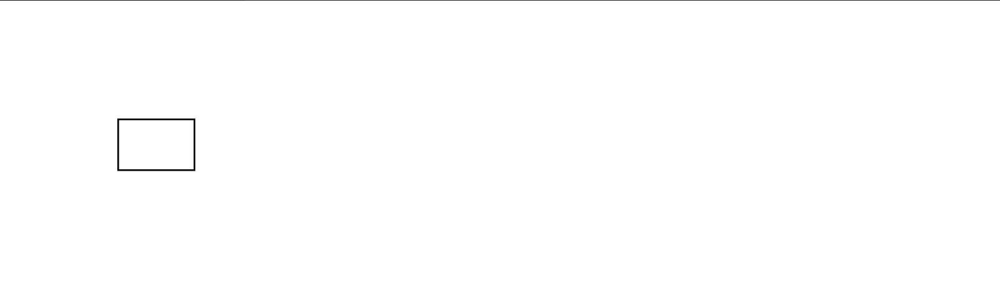
内容
可以在矩形中放置任意文字或内容，因此rect()不是一个简单的绘图函数，而是结合内容排版的。
#rect[]
#rect[123]
#rect[这里是内容]
#rect(width:100%)[这里是内容]
#rect[
任意内容
#image("1.png")
]
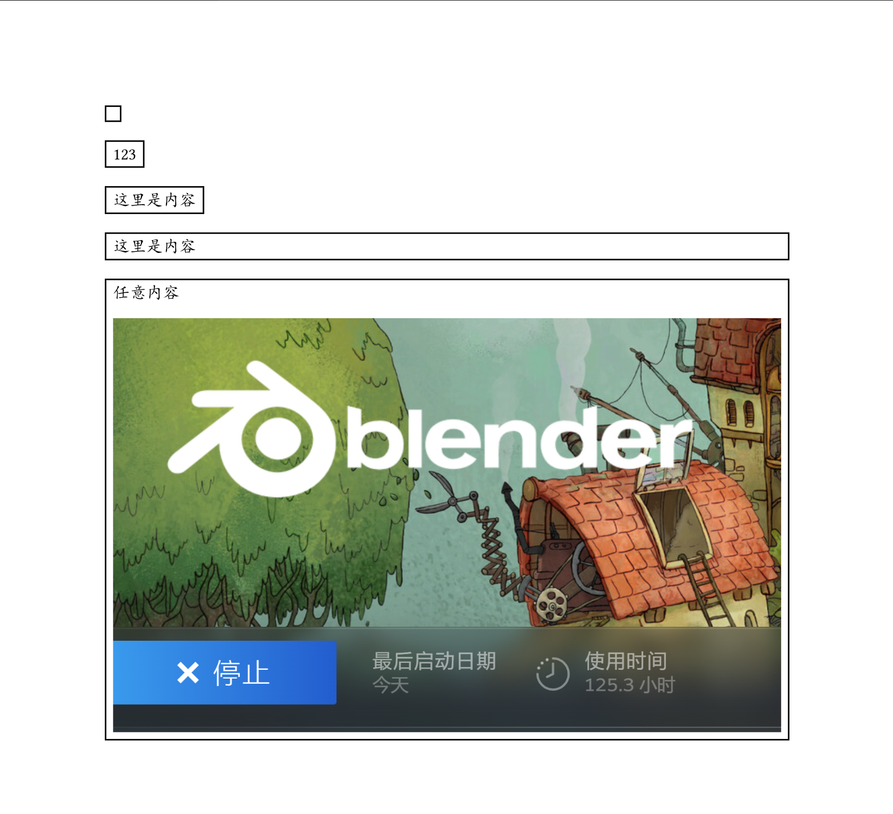
块级
rect()绘制的矩形是一个块级元素。
前面的文字，#rect[这里是内容]后面的文字。
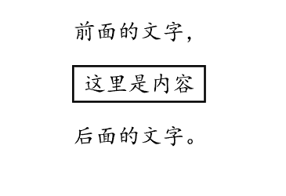
综合效果
#rect(
width:100%,
height: 30%,
fill: luma(220),
radius: 5pt, // 圆角
inset: 10pt, // 内容边距
outset: 10pt, // 向外扩展
stroke: 1pt +red
)[这里是内容]
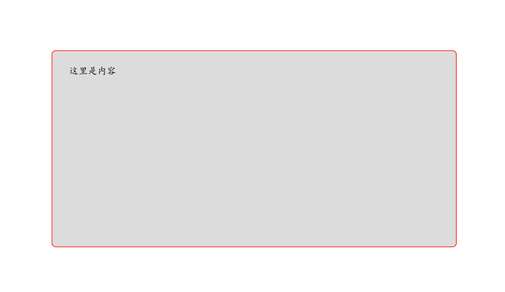
stroke的字典形式
stroke:(
top： // 顶部描边
right： // 右侧描边
bottom： // 底部描边
left： // 左侧描边
x： // 水平描边
y： // 垂直描边
rest：除字典明确设置大小的边外的所有边的笔画。
)
另外还可以使用2pt+blue这样的形式。
radius的字典形式
radius(
top-left： // 左上角半径
top-right： // 右上角的半径
bottom-right：// 右下角半径
bottom-left： // 左下角半径
left： // 左上角和左下角半径
top： // 左上角和右上角的半径
right： // 右上角和右下角的半径
bottom： // 左下角和右下角半径
rest： // 除字典明确设置大小的角之外的所有角的半径
)
正方形square(）
square(
size: auto length, // 边长
width: auto relative, // 宽度
height: auto relative, // 高度
fill: none colorg radientpattern, // 填充
stroke: none auto length color gradient stroke pattern dictionary, // 边线样式
radius: relative dictionary, // 圆角半径
inset: relative dictionary, // 内容边距
outset: relativ edictionary, // 向外扩充距离
body: none content, // 内容
) -> content
size和width、height指定一个即可size和width或height不能同时指定，width和height可以同时指定-width和height同时指定时，谁大谁做边长- 其他与
rect()类似
#square()
#square[123]
#square(width: 100pt)[
#place(center+horizon)[123] // 居中内容
]
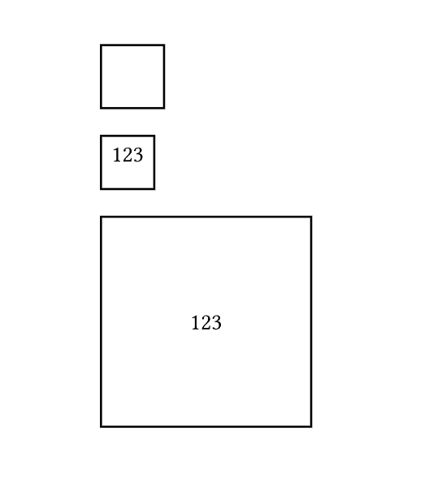
圆circle(）
circle(
radius: length, // 半径
width: auto relative, // 宽度
height: auto relative, // 高度
fill: none color gradient pattern, // 填充
stroke: none auto length color gradient stroke pattern dictionary, // 边线样式
inset: relative dictionary, // 内容边距
outset: relative dictionary, // 向外扩展距离
body: none content, // 内容
) -> content
- 与正方形之于矩形类似，
circle()也只能绘制圆而不能绘制椭圆。想要绘制椭圆，需使用ellipse()函数。 radius和width/height，不能同时指定
#circle()
#circle[123]
#circle(width:2cm,fill: orange,stroke: 1pt)[
#place(center+horizon)[123]
]
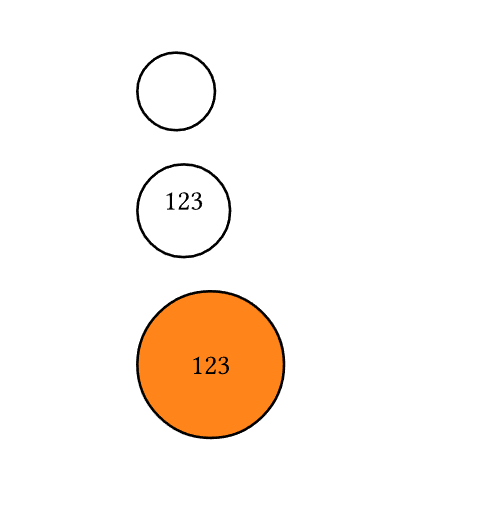
椭圆ellipse(）
ellipse(
width: auto relative, // 宽度
height: auto relative, // 高度
fill: none color gradient pattern, // 填充
stroke: none auto length color gradient stroke pattern dictionary, // 边线
inset: relative dictionary, // 内边距
outset: relative dictionary, // 向外扩充距离
body: none content, // 内容
) -> content
#ellipse()
#ellipse[]
#ellipse[123]
#ellipse(width: 2cm,height: 1.5cm)[
#place(center+horizon)[123]
]
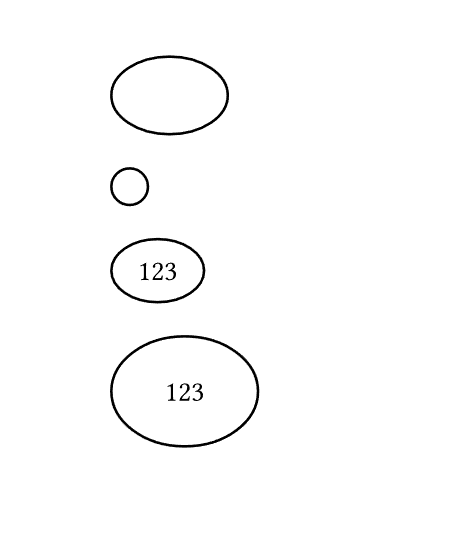
直线段line(）
line(
start: array, // 线段起点，默认：(0pt, 0pt)
end: none array, // 线段终点，默认：none
length: relative, // 线段长度，仅当end为none时，才会考虑此参数
angle: angle, // 末端点指向的方向，仅当end为none时，才会考虑此参数
stroke: length colorg radient stroke pattern dictionary,
) -> content
#line()
#line(length: 100%)
#line(angle: 90deg)
#line(end: (100pt,100pt),stroke: 1pt+red)
#line(end: (100pt,100pt),stroke:(dash: "dashed"))
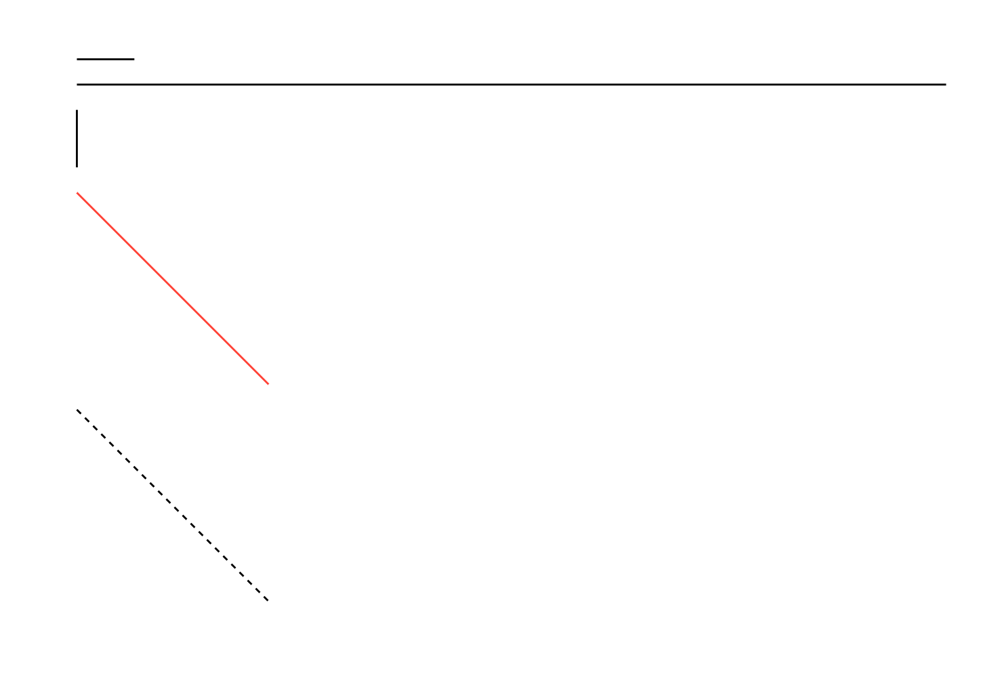
路径path(）
path()可以通过指定顶点列表绘制简单的折线、多边形或贝塞尔曲线。
path(
fill: none color gradient pattern, // 填充
stroke: none autolength colorg radient stroke pattern dictionary, // 描边样式
closed: bool, // 是否闭合路径
vertices:array, // 顶点列表
) -> content
每个顶点可以通过 3 种方式定义：
- 一个常规点
- 一个包含两个点的数组，第一个点是顶点，第二个点是控制点。控制点相对于顶点表示，并进行镜像以获得第二个控制点。给定的控制点是影响进入此顶点的曲线的控制点（即使对于第一个点也是如此）。镜像的控制点会影响从此顶点流出的曲线。
- 三个点的数组，第一个是顶点，第二个是控制点（分别是传入和传出的曲线的控制点）。
#path(
closed: true,
(100pt,100pt),
(200pt,200pt),
(100pt,200pt),
)
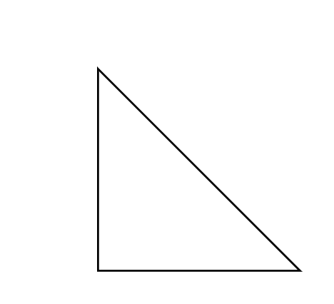
曲线curve()
curve()是新版本中替代path()的函数。
let curve(
..components: content,
fill: color = none, // 填充
fill-rule: str = "non-zero", // 填充规则
stroke: stroke = auto, // 边线样式
);
#curve(
fill: blue.lighten(80%),
stroke: blue,
curve.move((0pt, 50pt)),
curve.line((100pt, 50pt)),
curve.cubic(none, (90pt, 0pt), (50pt, 0pt)),
curve.close(),
)
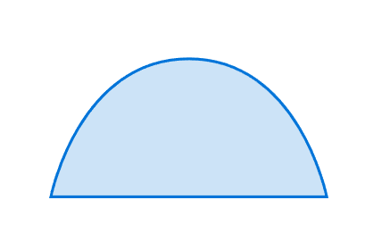
多边形polygon(）
polygon(
fill: none color gradient pattern,
stroke: none auto length color gradient stroke pattern dictionary,
vertices:array, // 顶点列表
) -> content
样式相关函数
stroke(）
stroke(
paint: auto color gradient pattern, // 描边样式
thickness: auto length, // 描边粗细
cap: auto str, // 描边末端的渲染方式
join: auto str, // 拐角渲染方式
dash: none auto str array dictionary, // 虚线样式
miter-limit: auto float, //
) -> stroke
cap值指定端点样式：
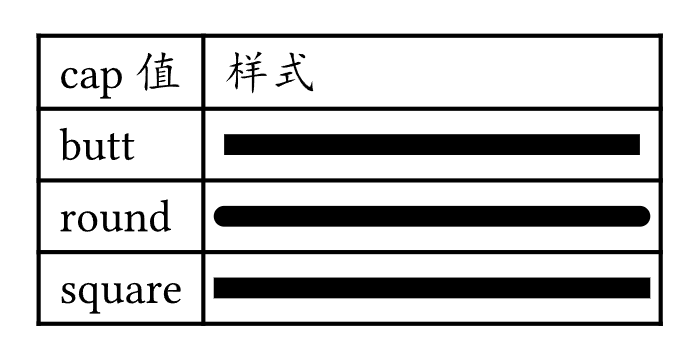
join值，指定拐点样式：
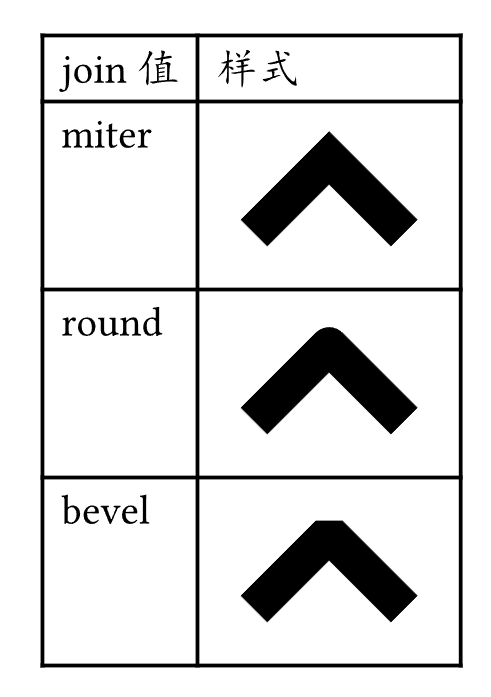
dash值，指定虚线样式：
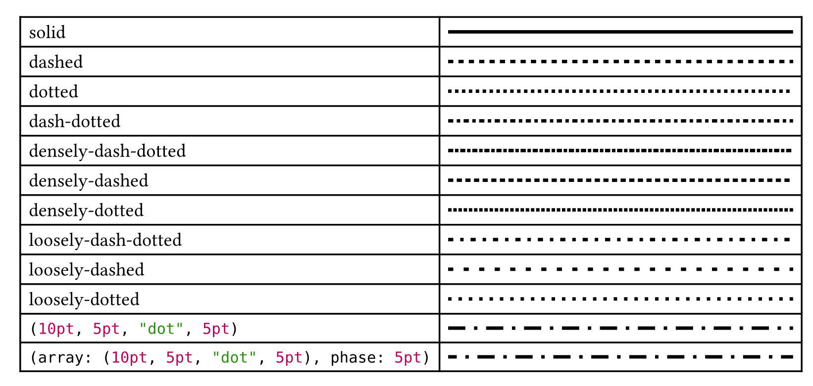
| 值 | 描述 |
|---|---|
| dash: (10pt,5pt,“dot”,5pt) | 定义了“虚线长度10pt，间隔5pt，绘制点，间隔5pt”的模式，用于虚线的重复样式。字符串 "dot" 表示一个点。 |
| dash: (array:(10pt,5pt,“dot”,5pt),phase: 5pt)) | 一个字典：+ array指定和上述类似的数组+ phase指定开始绘制的位置 |
颜色
// ----------- 使用内置颜色名称 ---------------
color.green // 颜色名称
// ----------- 灰度色 ---------------
color.luma(100) // 指定亮度的灰色 0~255
// ----------- 各种颜色空间颜色构造 ---------------
color.rgb(255,45,255,100) // RGBA
color.rgb("#ccc") // 十六进制颜色字符串
color.linear-rgb(200,200,200,200)
color.hsl(100deg, 100, 100, 100)
color.hsv(90deg,100,100,100)
color.oklab()
color.oklch()
color.cmyk()
内置颜色名称
Typst 内置了一些颜色，可以直接通过其名称使用。
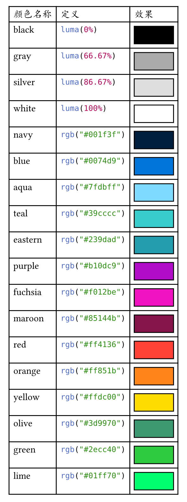
#rect(fill:red)
#rect(fill:blue)
#rect(fill:green)
灰度色luma()
luma()用于构造灰度色：
color.luma(
lightness: int ratio, // 亮度,0~255之间的整数，或者0%~100%之间的比例
alpha: ratio, // Alpha分量。
color, // 要转换为灰度的颜色。
) -> color
#rect(fill:luma(200))
#rect(fill:luma(90%))
RGB颜色构造
#rect(fill:rgb(255,45,255,100)) // RGBA
#rect(fill:rgb("#ccc")) // 十六进制颜色值
其他颜色空间函数
除了RGB之外，Typst还支持其他颜色空间的函数。可以自行实验。
color.linear-rgb(200,200,200,200)
color.hsl(100deg, 100, 100, 100)
color.hsv(90deg,100,100,100)
color.oklab()
color.oklch()
color.cmyk()
预定义的颜色映射表
Typst 内置许多可用于渐变的预设颜色映射。
可以使用如下形式指定：
fill:gradient.linear(..color.map.xxx))
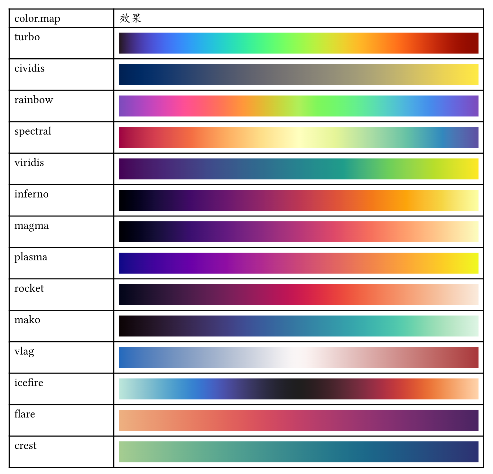
颜色函数
color类型或者叫模块，提供了诸多方法，也可以通俗的叫做“颜色函数”。来实现一些颜色相关的操作。
components
components()用于获取颜色分量组成的数组。
components(
alpha:bool // 是否包含 Alpha 分量。
) -> array
#rgb(100,100,100).components() // (39.22%,39.22%,39.22%,100%)
#rgb("#ccc").components() // (80%,80%,80%,100%)
space
space()获取颜色值的构造函数名。
#let color = cmyk(1%, 2%, 3%, 4%)
#(color.space()) // cmyk
to-hex
返回颜色的 RGB（A） 十六进制表示形式（如 #ffaa32 或 #020304fe）。如果 alpha 分量等于 ff （255 / 100%），则省略 alpha 分量（#020304fe 中的最后两位数字）。
#rgb(100,100,100).to-hex() // #646464
#blue.to-hex() // #00749
lighten和darken
lighten()和darken()用于获得已有颜色的更量或更暗的版本。
blue.lighten(x%) // 获取更亮的蓝色
blue.darken(x%) // 获取更暗的蓝色
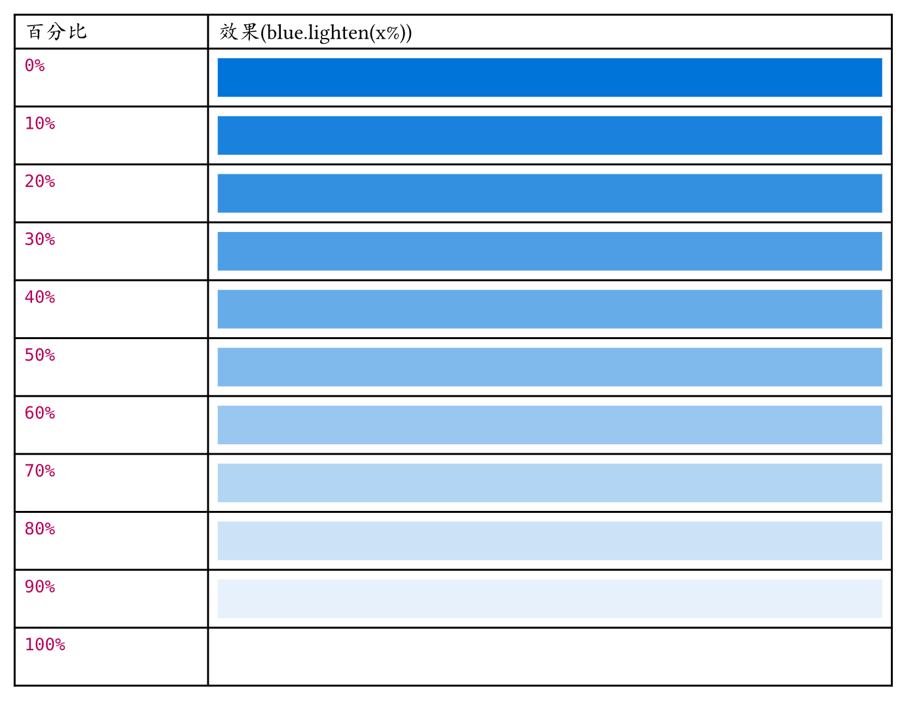
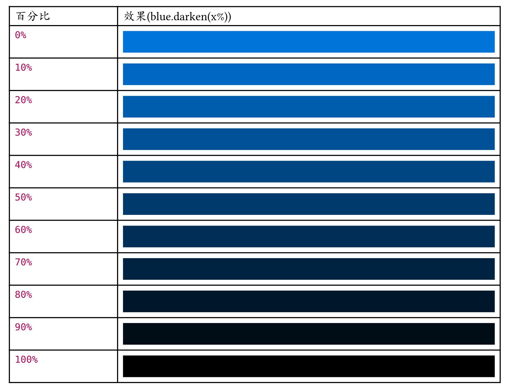
saturate和desaturate
增加或减少饱和度。
blue.desaturate(x%)
negate
使用提供的色彩空间生成互补色。您可以将其视为色轮上的另一侧。
self.negate(space:any) -> color
rotate
将颜色的色相旋转给定的角度。
self.rotate(
angle,
space: any,
) -> color
mix
通过混合两种或多种颜色来创建颜色。
在具有色相分量（hsl、hsv、oklch）的色彩空间中，一次只能混合两种颜色。在这样的空间中混合两种以上的颜色将导致错误！
color.mix(
..colorarray,
space: any,
) -> color
实现类似两种颜色之间插值的效果：
color.mix(
(blue,10% * i),
(red,100% - 10% * i),
)
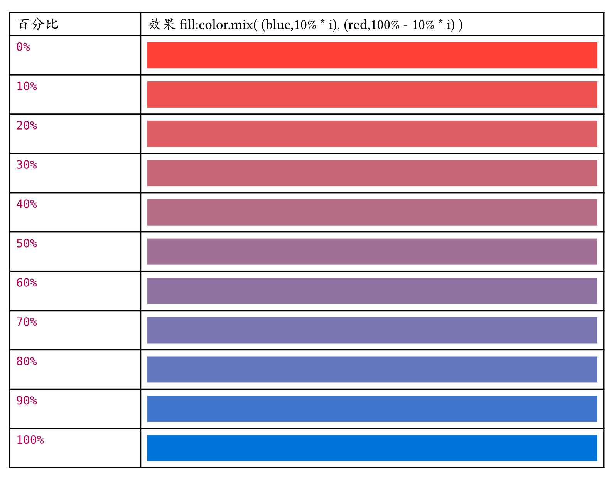
transparentize和opacify
transparentize()设定颜色的透明度opacify()设定颜色的不透明度
渐变
包括线性渐变、径向渐变和锥形渐变。
#square(fill: gradient.linear(..color.map.rainbow)) \\ 线性渐变
#square(fill: gradient.radial(..color.map.rainbow)) \\ 径向渐变
#square(fill: gradient.conic(..color.map.rainbow)) \\ 锥形渐变
线性渐变
gradient.linear(
stops: color array, // 停止点
space: any, // 要在其中对渐变进行插值的色彩空,默认为oklab
relative: auto str, // 渐变的相对位置
dir: direction, // 渐变方向
angle: angle, // 渐变角度
) -> gradient
双色线性渐变
#set rect(width:100%,height: 100pt)
#let gds = (
gradient.linear(red,blue), // 最简单的用法，指定两个颜色
gradient.linear(red,blue,angle:45deg), // 渐变角度45°
gradient.linear(red,blue,dir:ttb), // 渐变方向上到下
)
#for gd in gds [
#gd
#rect(fill:gd)
]
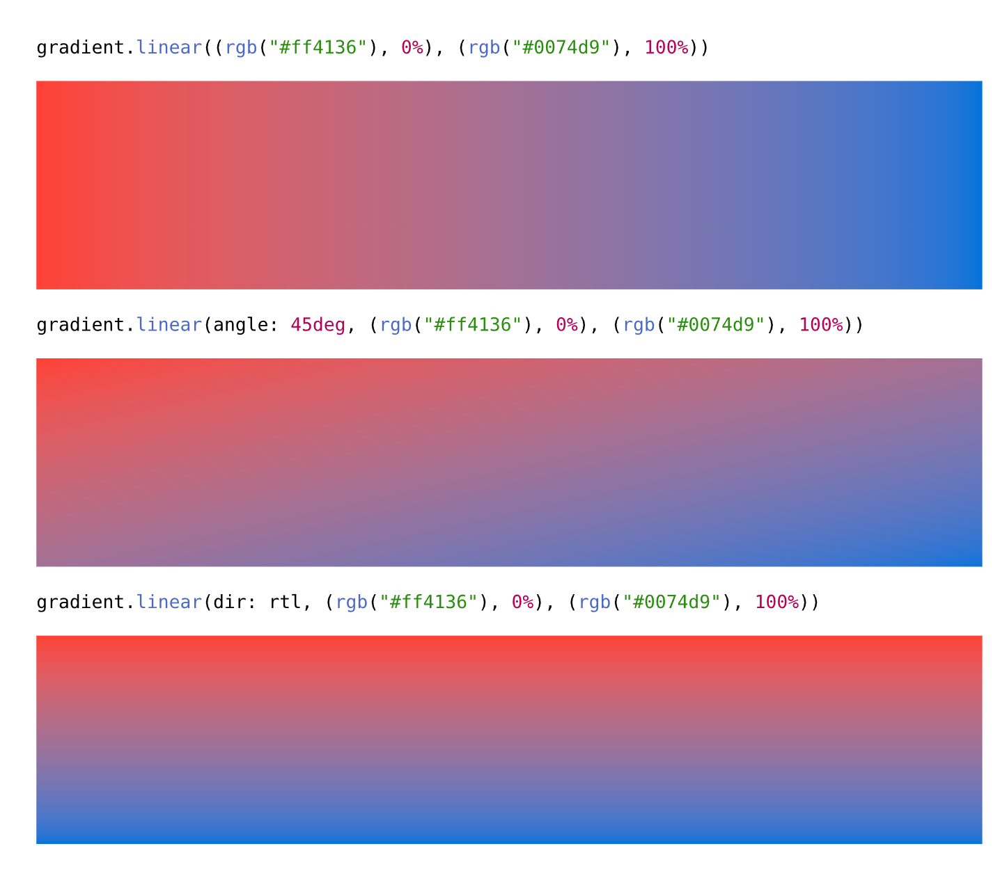
径向渐变
gradient.radial(
colorarray,
space: any,
relative: autostr,
center: array,
radius: ratio,
focal-center: autoarray,
focal-radius: ratio,
) -> gradient
锥形渐变
gradient.conic(
colorarray,
angle: angle,
space: any,
relative: autostr,
center: array,
) -> gradient
渐变可用于以下目的：
- 作为填充来绘制形状的内部：
rect(fill: gradient.linear(..)) - 作为描边来绘制形状的轮廓：
rect(stroke: 1pt + gradient.linear(..)) - 作为文本的填充：
set text(fill: gradient.linear(..)) - 作为色图，您可以从以下位置取样：
gradient.linear(..).sample(0.5)
纹理
旧版本叫pattern，新版版叫tiling。
tiling(
size: auto array, // 尺寸
spacing: array, // 间距
relative: auto str,
body: content, // 纹理要平铺的内容
) -> pattern
#let pat = tiling(size: (30pt, 30pt))[
#rect(width: 30pt,height: 30pt)
]
#rect(fill: pat, width: 100%, height: 120pt, stroke: 1pt)
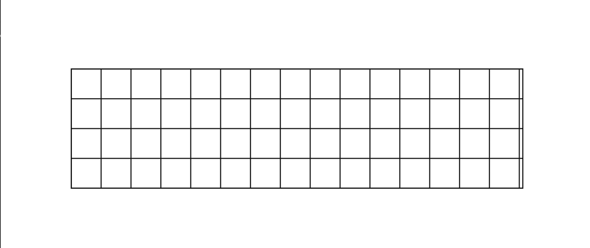
#let pat = tiling(size: (30pt, 30pt))[
#place(line(start: (0%, 0%), end: (100%, 100%)))
#place(line(start: (0%, 100%), end: (100%, 0%)))
]
#box(fill: pat,width:30pt,height: 30pt)
#rect(fill: pat, width: 100%, height: 120pt, stroke: 1pt)
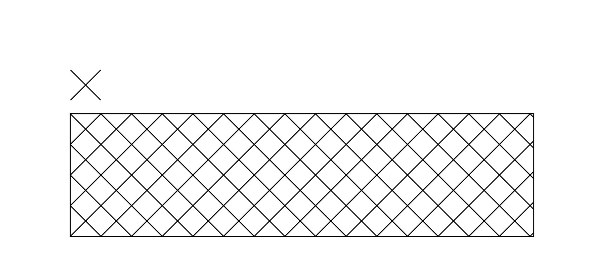
#let pat = tiling(size: (30pt, 30pt))[
#line()
]
#rect(fill: pat, width: 100%, height: 120pt, stroke: 1pt)
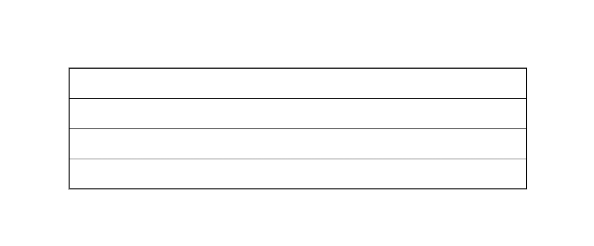
#let pat = tiling(size: (10pt, 10pt))[
#place( line())
#place( line(angle: 90deg))
]
#rect(fill: pat, width: 100%, height: 120pt, stroke: 1pt)
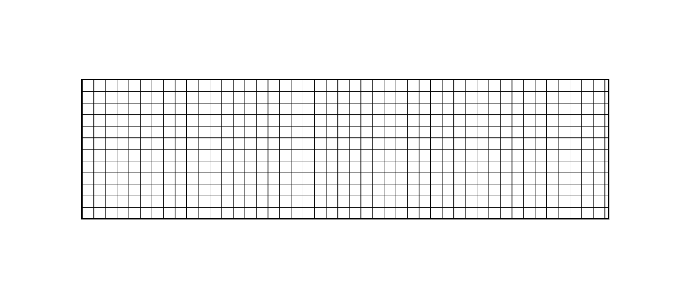
#let pat = tiling(size: (30pt, 30pt))[
#set rect(width: 50%,height: 50%,fill: red)
#place()[#rect(width: 50%,height: 50%)]
#place(dx:15pt,dy:15pt)[#rect()]
]
#box(fill: pat,width:30pt,height: 30pt)
#rect(fill: pat, width: 100%, height: 120pt, stroke: 1pt)
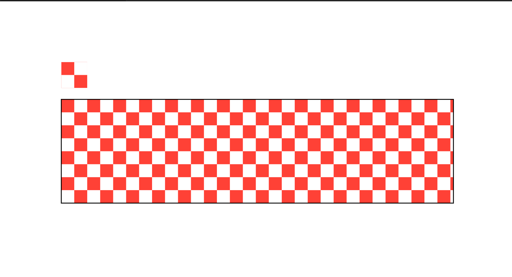